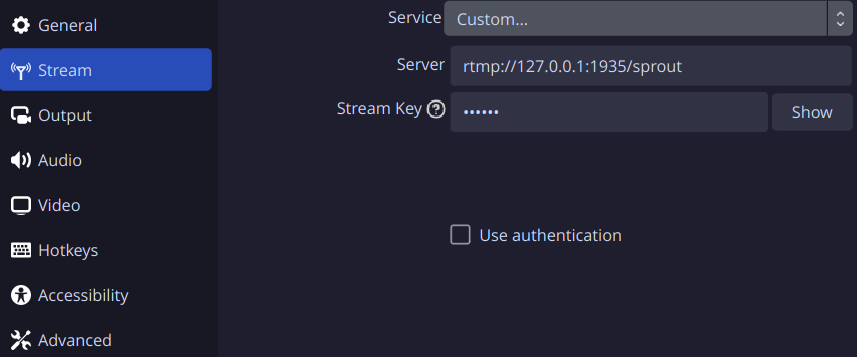

Open-source multistreaming
Stream once.
Go live everywhere.
Send one stream from OBS Studio to Twitch, YouTube, Owncast, PeerTube, and other platforms at the same time from your own computer.
Free and open source for Linux and containers, with no third-party service required.
Features
Made for simple multistreaming.
Keep your OBS Studio scenes and settings. Stream Sprout sends that one broadcast to every platform you choose.
Explore the wiki- Stream to multiple platforms with no extra CPU load
- Broadcast to Twitch, YouTube, Owncast, PeerTube, and other services at the same time. Your computer encodes once, so extra destinations add no extra processor load.
- One straightforward config file
- Store your destinations and stream keys in a single
stream-sprout.yamlfile. Switch any platform on or off with one line before you go live. - Optional local backup recording
- Save a copy of your stream straight to disk while you broadcast. Each file receives a date and time stamp so it is ready to edit or upload later.
- Lightweight and clean on Linux
- Run Stream Sprout beside OBS Studio with no root privileges, no heavy background services, and no monthly relay fee.
Getting started
Go live in four steps.
Install once, add your stream keys, and connect OBS Studio to your local Stream Sprout address.
-
Install
Install Stream Sprout
Choose your Linux package repository or container image from the install section below.
-
stream-sprout.yamlAdd your stream keys
Copy the example config file, enable the platforms you want, and paste each stream key.
-
rtmp://127.0.0.1:1935/sproutConnect OBS Studio
Open Settings, choose Stream, pick Custom, and enter your local server address and stream key.
-
stream-sproutStart streaming
Run
stream-sproutin a terminal, then click Start Streaming in OBS Studio to go live everywhere.

Check your upload speed: each active platform receives its own copy of your stream, so make sure your internet upload bandwidth covers the total bitrate across every enabled destination.
Install
Get Stream Sprout.
Each repository is signed, and its page gives the setup steps and keeps Stream Sprout up to date.
-
 Linux
Debian and Ubuntu
apt.wimpys.world
Linux
Debian and Ubuntu
apt.wimpys.world
-
 Linux
Fedora and openSUSE
rpm.wimpys.world
Linux
Fedora and openSUSE
rpm.wimpys.world
-
 Linux
Arch Linux
pkg.wimpys.world
Linux
Arch Linux
pkg.wimpys.world
-
 Linux
Alpine Linux
apk.wimpys.world
Linux
Alpine Linux
apk.wimpys.world
-
 Nix
Nix and NixOS
nix.wimpys.world
Nix
Nix and NixOS
nix.wimpys.world
-
Container Docker and Podman
docker pull ghcr.io/wimpysworld/stream-sprout:latest-alpine